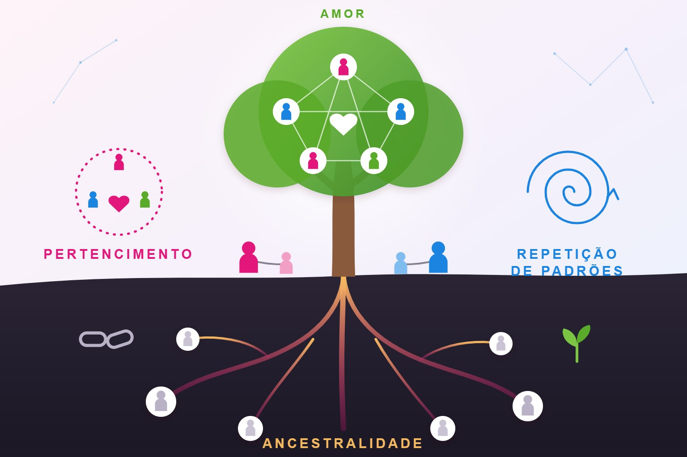

Autoconhecimento
O que é Constelação Familiar?

A Constelação Familiar é uma abordagem terapêutica desenvolvida pelo alemão Bert Hellinger na década de 1970. Ela parte da ideia de que muitos conflitos emocionais, comportamentais e até dificuldades recorrentes na vida de uma pessoa podem estar ligados a dinâmicas inconscientes do seu sistema familiar.
Segundo essa abordagem, pertencemos a um “sistema” familiar que influencia nossas escolhas, emoções e padrões de comportamento, mesmo que não tenhamos consciência disso.
A constelação pode ser realizada em grupo ou individualmente (inclusive com objetos ou bonecos representando membros da família).
Para que serve?
A constelação familiar busca:
- Identificar padrões repetitivos na vida da pessoa
- Compreender conflitos familiares
- Trazer clareza sobre bloqueios emocionais
- Promover reconciliação interna com a própria história
- Melhorar relacionamentos
A proposta não é “apontar culpados”, mas ampliar a consciência sobre vínculos e dinâmicas ocultas.
O que a Constelação pode ajudar a trabalhar?
Relatos de pessoas que procuram essa abordagem geralmente envolvem:
- Conflitos familiares recorrentes
- Dificuldades nos relacionamentos amorosos
- Problemas de autoestima
- Sensação de não pertencimento
- Padrões repetitivos de fracasso profissional ou financeiro
- Dificuldade em tomar decisões
- Conflitos entre pais e filhos
É importante destacar que a constelação não substitui tratamento médico ou psicológico, especialmente em casos de transtornos mentais diagnosticados. Ela é considerada uma prática complementar.
Para quem se aplica?
A constelação familiar costuma ser procurada por pessoas que:
- Sentem que repetem padrões negativos na vida
- Vivem conflitos familiares persistentes
- Desejam compreender melhor suas relações
- Buscam autoconhecimento
- Estão passando por momentos de transição (divórcio, luto, mudança de carreira, etc.)
Também é aplicada em contextos organizacionais (constelação organizacional), quando há interesse em compreender dinâmicas de equipes, liderança e conflitos empresariais.
Pontos importantes a considerar
- A constelação familiar não é reconhecida como prática científica pela maior parte da comunidade acadêmica.
- Não há consenso científico robusto sobre sua eficácia.
- Deve ser conduzida por profissionais capacitados e com postura ética.
- Não substitui psicoterapia, psiquiatria ou tratamento clínico quando necessário.
Em resumo
A constelação familiar é uma abordagem terapêutica sistêmica que busca trazer à consciência dinâmicas familiares inconscientes que podem influenciar a vida da pessoa. É procurada principalmente para questões emocionais e relacionais, com foco em autoconhecimento e reorganização interna.
Referências
- Maria Del Mar Gonzalez Franco
- Instituto Evoluir
- Série: Uma Nova Mulher (Netflix)
Leia também
O que é pior: a mentira ou o segredo?
A diferença entre mentir e guardar um segredo, por que fazemos isso e como lidar com a verdade.
Ler matériaO que é a “sombra” na psicologia e o método 3-2-1
Uma prática simples para reconhecer, compreender e integrar partes de si que costumam ficar ocultas.
Ler matéria
Todas as religiões levam ao bem: amor, caridade e evolução
Muitos caminhos, um mesmo princípio: amar o próximo, praticar a caridade e evoluir a cada dia.
Ler matériaGostou desta matéria? Veja outras no blog, conheça nossas referências ou fale com a gente.